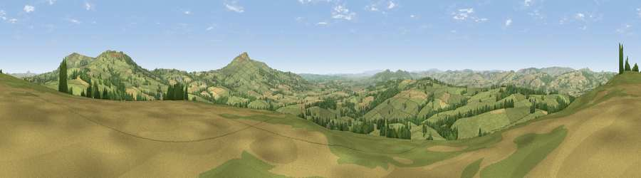

Viewpoint near Stoke St Milborough
#5341 in England · top 14% of its area beats it · near Stoke St MilboroughWhere it is
The exact computed spot (SO 55400 82125). Click the marker for map links.
The view, rendered

A 360° render of this exact spot computed from the terrain model, tree cover and land cover — summer colours, afternoon light, calibrated against photographs of famous viewpoints. Real trees, hedges and buildings will differ in detail.
The panorama
Grey silhouette: terrain skyline in each direction (720 bearings, Earth curvature and refraction included). Dashed green: skyline with trees (+15 m) and buildings (+8 m) as obstacles. Blue strip: how far the ground is visible on each bearing.
Where the view opens
Wedge length = distance to the farthest visible ground on that bearing (vegetation-aware). Rings at 10, 25 and 50 km.
What fills the view
71% grassland · 17% cropland · 12% woodland ·
Angular shares of the visible panorama (visual magnitude), not map area. Landscape diversity 0.36 (0–1 Shannon).
Key numbers
More beautiful places nearby
The staircase of upgrades: each row has a higher view potential than everything closer. Driving times are estimates from straight-line distance, calibrated against real road routing — check an actual route before setting out.
| Place | Direction | Drive | Score |
|---|---|---|---|
| Clee Burf | ENE · 5 km | ~10 min | 79.0 |
| Viewpoint near Burwarton | ENE · 5 km | ~11 min | 83.4 |
| Titterstone Clee | SE · 6 km | ~12 min | 83.8 |
| The Lawley | NNW · 16 km | ~29 min | 85.8 |
| Viewpoint near Little Wenlock | NNE · 27 km | ~43 min | 86.6 |
| North Hill | SSE · 42 km | ~61 min | 86.8 |
| Worcestershire Beacon | SSE · 43 km | ~63 min | 87.1 |
| Viewpoint near West Quantoxhead | SSW · 146 km | ~169 min | 87.9 |
52.43527, -2.65746 · source: screening · position refined by local search. Computed location — check access rights before visiting.